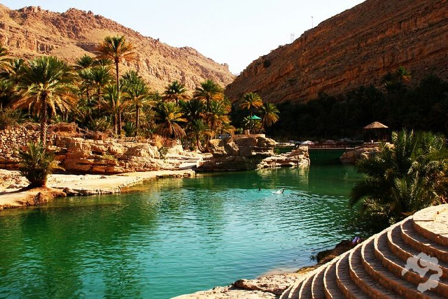

Culture
-
Oman has a rich cultural heritage shaped by its history as a
maritime trading nation and its Islamic traditions.
-
The majority of the population follows the Ibadi sect of Islam,
which has a moderate and tolerant interpretation.
-
Omani culture values hospitality, respect for elders, and preserving
traditions, which are reflected in various aspects of daily life,
including dress, cuisine, and social customs.
-
Traditional arts and crafts, such as pottery, weaving, and
silverwork, are still practiced and celebrated in Omani society.
Tourism
- Oman is increasingly becoming a popular tourist destination
known for its stunning natural landscapes,
ancient forts, and rich cultural heritage.
- Key tourist attractions include the historic city
of Muscat, the ancient port town of Sur, the Wahiba
Sands desert, and the picturesque beaches of Salalah.
- Visitors can also explore traditional Omani markets (souks),
go dolphin watching, trek in the mountains, or experience Bedouin
culture in desert camps.